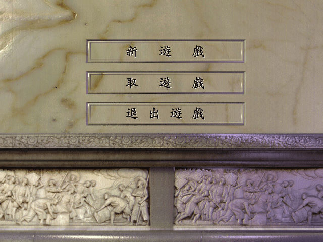
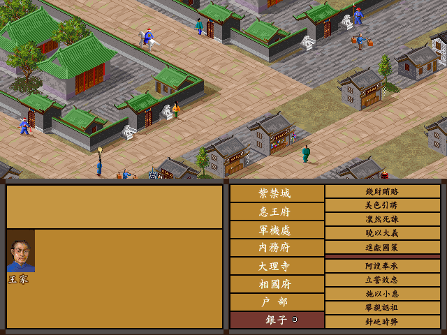

名稱：鴉片戰爭：禁煙風雲 (繁中／簡中版)
簡介：金盤1997年出品的策略遊戲，主要是做為慶祝1997年香港回歸的愛國之作，1998年由
歡樂盒代理繁中版，並將慶祝香港回歸的字樣全數刪除 [待補]。


保護：光碟
限制：遊戲為16位元，只能在Win31/9x/XP系統上執行。
備註：繁中版因增加了歡樂盒的DOS版LOGO顯示程式，會造成不同系統的多種狀況，建議是將
光碟上的LOGO.EXE更名或刪掉，可避免很多問題（例如XP系統顯示完LOGO後當死）。